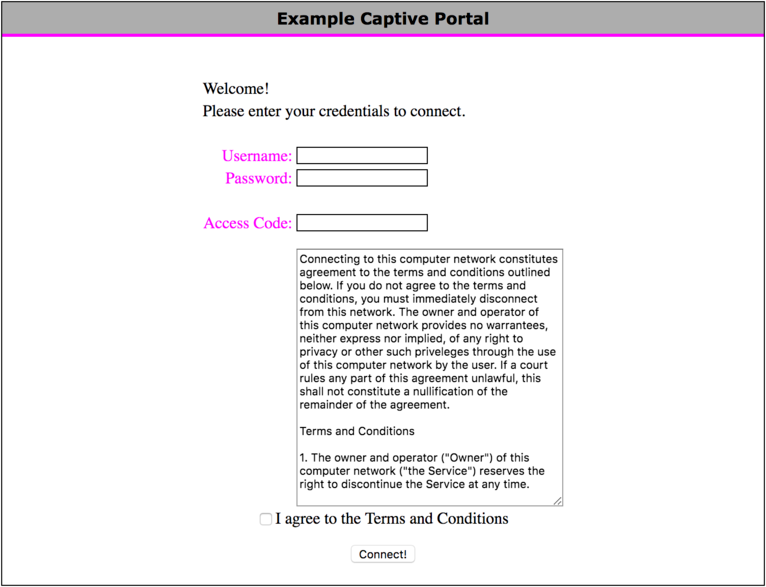

{kind=link}
We believe security software like Whonix needs to remain Open Source and independent. Would you help sustain and grow the project? Learn more about our 14 year success story and maybe DONATE!

Captive Portals Login. Whonix in WiFi Hotspots. Unsafe browser.
Introduction
Many publicly accessible Internet connections found at cafes, libraries, airports, hotels, universities and other locations require its users to register and login in order to get access to the Internet. This means newly connected users of the (free or paid) Wi-Fi or wired network have their browser redirected to a "captive portal" landing or login page, which requires either authentication, payment, acceptance of end-user license agreements, acceptable use policy, survey completion or other credentials before broader access to network resources is granted. [1] [2]
Figure: Sample Captive Portal [3]

Privacy Concerns
In general, captive portals pose a number of privacy concerns. Depending on the portal in question, it may be necessary to enter personal information such as an email or social media account, account number (when in a library), hotel room number, or other identifying details. [4] Recent research on Wi-Fi hotspots has revealed: [5]
- Social login providers may share several privacy-sensitive fields - for example LinkedIn shares the full name, email address profile picture, current location and full employment history.
- The vast majority of hotspots utilize tracking technologies in their captive portals and landing pages - multiple third-party tracking domains and persistent third-party HTTP cookies are common.
- Personal and unique device information is sometimes shared with third-party domains (even without HTTPS).
- A majority expose the user's device MAC address.
- Sometimes personally sensitive information is leaked via HTTP, including full name, email address, phone number, address, postal code, date of birth and age.
- Some hotspots explicitly link MAC address to collected personal information, allowing long-term user tracking.
This research confirms that while VPNs and the adoption of HTTPS on most websites mostly secures users' personal information from malicious hotspot providers, device/user tracking is still a serious privacy threat.
Logging into Captive Portals
When using VMs
It is not possible to access captive portals inside Whonix-Workstation™. Therefore, in Non-Qubes-Whonix™ it is necessary to use the browser on the host operating system for this purpose, since it has unrestricted network access. In Qubes-Whonix, a separate dedicated VM must be used such as a Debian or Fedora AppVM.
It must be stressed that this configuration is not anonymous, so it must be used carefully.
When using Physical Isolation
There is no unsafe browser installed by default on Whonix-Gateway™ (see below for instructions). As a workaround a third machine can be used which has access to clearnet, or the hardware which runs Whonix-Gateway™ can be booted with another operating system (from USB), which is not torified.
Security Recommendations
- While this browser can be used without any restrictions, it is strongly recommended to only use it for the purpose stated above, that is to access and login on captive portals.
- Do not run this browser at the same time as the normal, anonymous Tor Browser. Otherwise, it is easy to mistake one browser for the other, which could have catastrophic consequences for anonymity.
- It is suggested to run this browser from a dedicated VM and lock it down with NoScript and isolation programs like FireJail (Linux only).
Unsafe Browser
Installation
 This procedure is discouraged!
This procedure is discouraged!
These steps must be completed while you still have an Internet connection. It cannot be done later on when an Internet connection is required, since no unsafe browser is installed by default.
The following instructions are applied on Whonix-Gateway.
1. Configure user home of user clearnet
to /home/clearnet as it is not set by Whonix default.
sudo usermod -m -d /home/clearnet clearnet
2. Create folder /home/clearnet.
sudo mkdir -p /home/clearnet
3. Set owner of folder /home/clearnet
to be user clearnet.
sudo chown -R clearnet:clearnet /home/clearnet
4. Install a browser.
This examples uses Firefox.
Note: Feel free to replace this example browser with a different browser.
Install package(s) firefox-esr following these
instructions:
1 Platform specific notice.
- Non-Qubes-Whonix: No special notice.
- Qubes-Whonix: In Template.
2
 Update the package lists and upgrade the system.
Update the package lists and upgrade the system.
sudo apt update && sudo apt full-upgrade
3
Install the firefox-esr package(s).
Using apt command line
 <code>--no-install-recommends</code> option is in most cases
optional.
<code>--no-install-recommends</code> option is in most cases
optional.
sudo apt install --no-install-recommends firefox-esr
4 Platform specific notice.
- Non-Qubes-Whonix: No special notice.
- Qubes-Whonix: Shut down Template and restart App Qubes based on it
as per
 Qubes Template Modification.
Qubes Template Modification.
5 Done.
The procedure of installing package(s) firefox-esr is
complete.
5. Done.
Unsafe browser installation has been completed.
Usage
1. Start bash as user
clearnet. [6]
sudo --set-home -u clearnet bash
2. Change directory into user clearnet
home folder.
cd ~
3. Start the browser.
firefox
Uninstallation
To remove the unsafe browser, apply the following instructions.
1. Purge firefox-esr.
sudo apt purge firefox-esr
2. Autoremove.
sudo apt autoremove
3. Optional: Delete the Firefox data directory.
rm -r /home/user/clearnet/.mozilla/firefox
Find out real external IP Address from inside Whonix-Gateway
Some users wish to find out the real external IP address which their Whonix-Gateway is using to connect to the Tor network. In other words, some users wish to find out their internet service provider (ISP) assigned IP address. Yet in other words, some users wish to find out their clearnet IP address.
There are at least 3 different methods, A), B) or C). Choose one.
A) Curl Method:
B) Using an unsafe browser on Whonix-Gateway
1. Enable Whonix-Gateway System DNS.
2. Install a browser inside Whonix-Gateway as per unsafe browser instructions.
3. Visit some IP check website such as for example https://check.torproject.org.
3. Done.
C) Tor Control Protocol Method:
On Whonix-Gateway using tor-ctrl and Tor control protocol.
tor-ctrl GETINFO address
Or the same command but with better machine readable output.
tor-ctrl -m GETINFO address
C) Other Methods:
License
Whonix Logging in to captive portals wiki page Copyright (C) Amnesia
Whonix Logging in to captive portals wiki page Copyright (C) 2012 - 2026 ENCRYPTED SUPPORT LLC <adrelanos(at)whonix.org(Replace(at)with@.)Please DO NOT use e-mail for one of the following reasons:Private Contact: Please avoid e-mail whenever possible. (Private Communications Policy)User Support Questions: No. (See Support.)Leaks Submissions: No. (No Leaks Policy)Sponsored posts: No.Paid links: No.SEO reviews: No.Advertisement deals: No.Default application installation: No. (Default Application Policy)>This program comes with ABSOLUTELY NO WARRANTY; for details see the wiki source code.
This is free software, and you are welcome to redistribute it under certain conditions; see the wiki source code for details.
Footnotes
- https://en.wikipedia.org/wiki/Captive_portal
- Captive portals are sometimes used for access to enterprise or residential wired networks, such as business centers, apartments or hotel rooms.
- https://en.wikipedia.org/wiki/File:Captive_Portal.png
- https://www.eff.org/deeplinks/2017/08/how-captive-portals-interfere-wireless-security-and-privacy
- https://arxiv.org/pdf/1907.02142v1.pdf
- The
sudo--set-homeparameter is important to prevent file permission issues since a GUI application is to be started under a different user account. Similar to
GUI Applications with Root Rights. Quote sudoman page:-H, --set-home
Request that the security policy set the HOME environment variable to the home directory specified by the target user's password database entry. Depending on the policy, this may be the default behavior.
Categories: Documentation